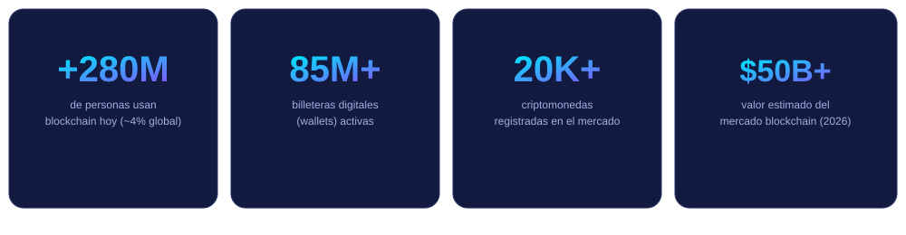

①
Acerca de blockchain
Qué es, cuál es su historia y cómo está construido un bloque paso a paso.
- Definición y origen
- Estructura de un bloque
- Función hash y minería
Blockchain es una forma de guardar y compartir información en la que miles de computadoras alrededor del mundo mantienen una misma copia de los datos, verificada con criptografía. Nadie la controla por sí solo, y una vez escrita, es prácticamente imposible de alterar. Así nació una nueva manera de confiar sin intermediarios.
Organizamos la información como una guía progresiva: primero los conceptos, luego los tipos de red, casos de uso reales, cómo dar tus primeros pasos y, al final, recursos multimedia para profundizar.
Qué es, cuál es su historia y cómo está construido un bloque paso a paso.
Redes públicas, privadas y de consorcio, además de los mecanismos que las hacen confiables.
De las criptomonedas a la trazabilidad de alimentos y los contratos inteligentes.
Requisitos, cómo crear e instalar una billetera digital, y buenas prácticas de seguridad.
Video explicativo, audio, infografías propias y enlaces a fuentes confiables.
¿Dudas sobre el sitio o el tema? Escríbenos por el formulario validado.
Estimaciones de la industria muestran una adopción cada vez mayor, más allá de las criptomonedas.

Reunimos material audiovisual, infografías propias y enlaces externos verificados sobre blockchain.
Ir a Recursos